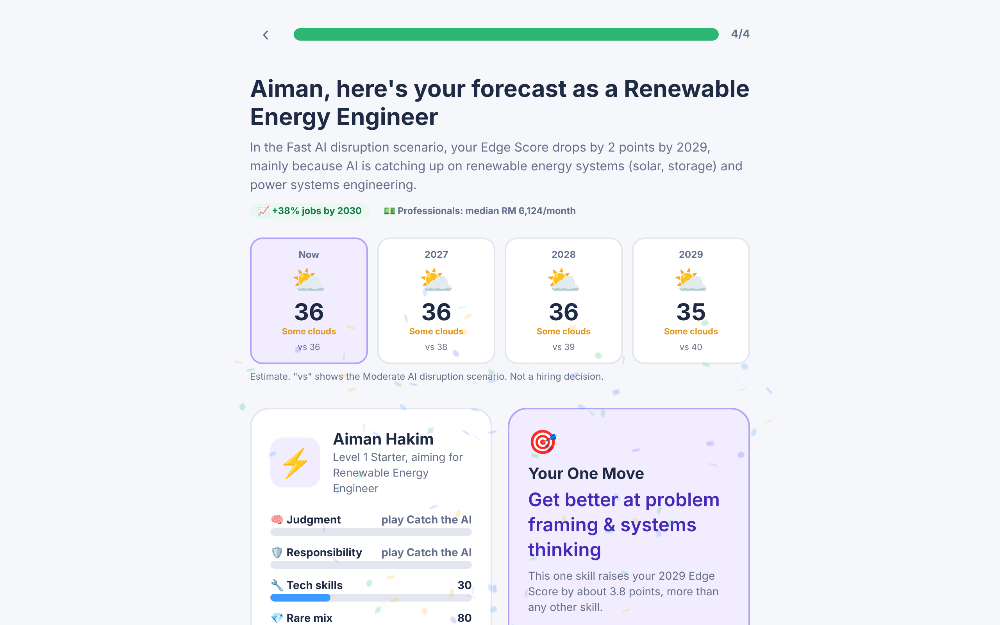
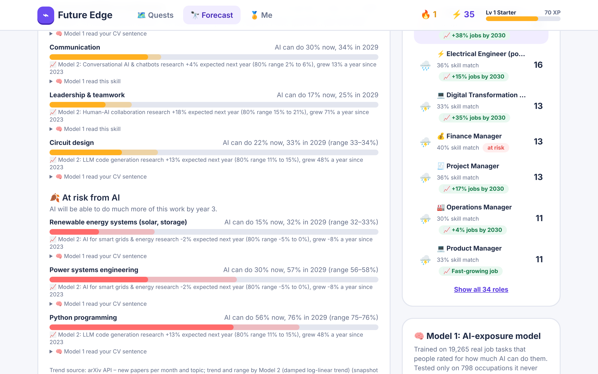
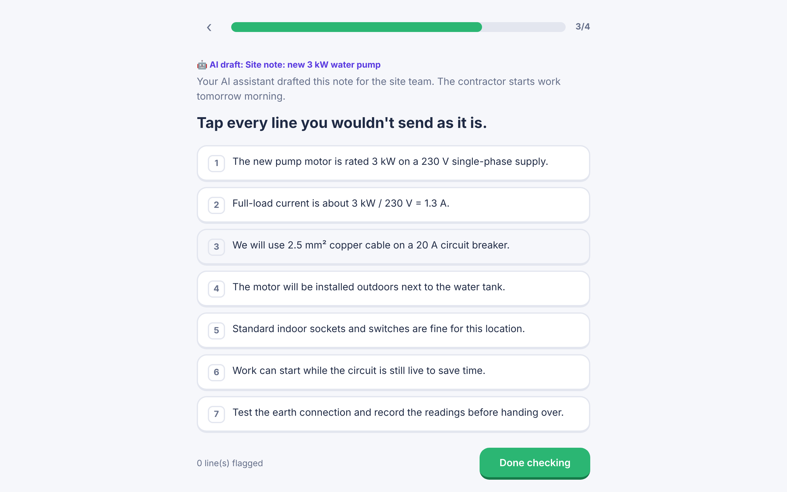
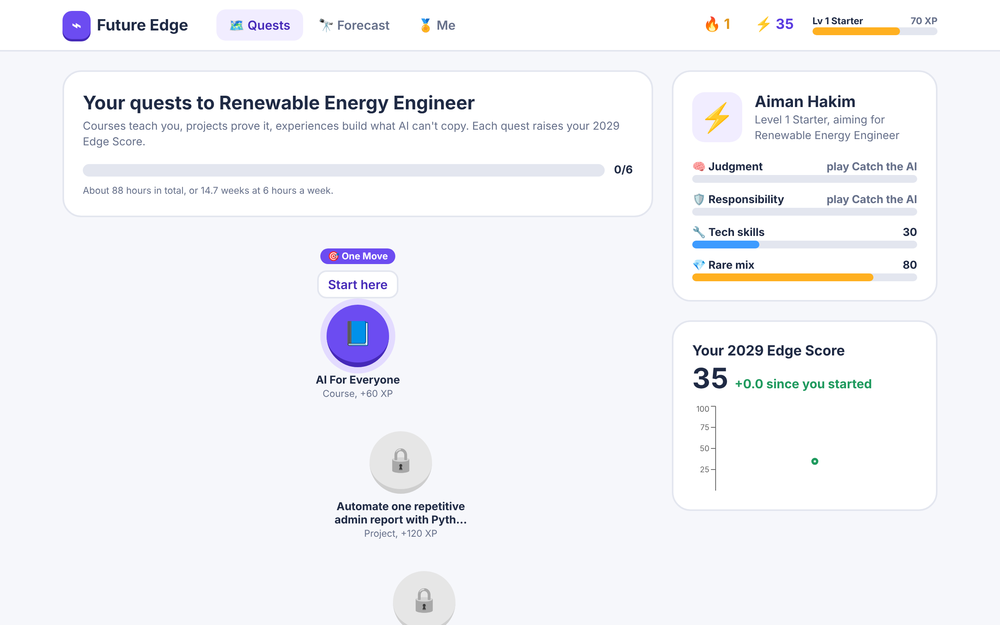
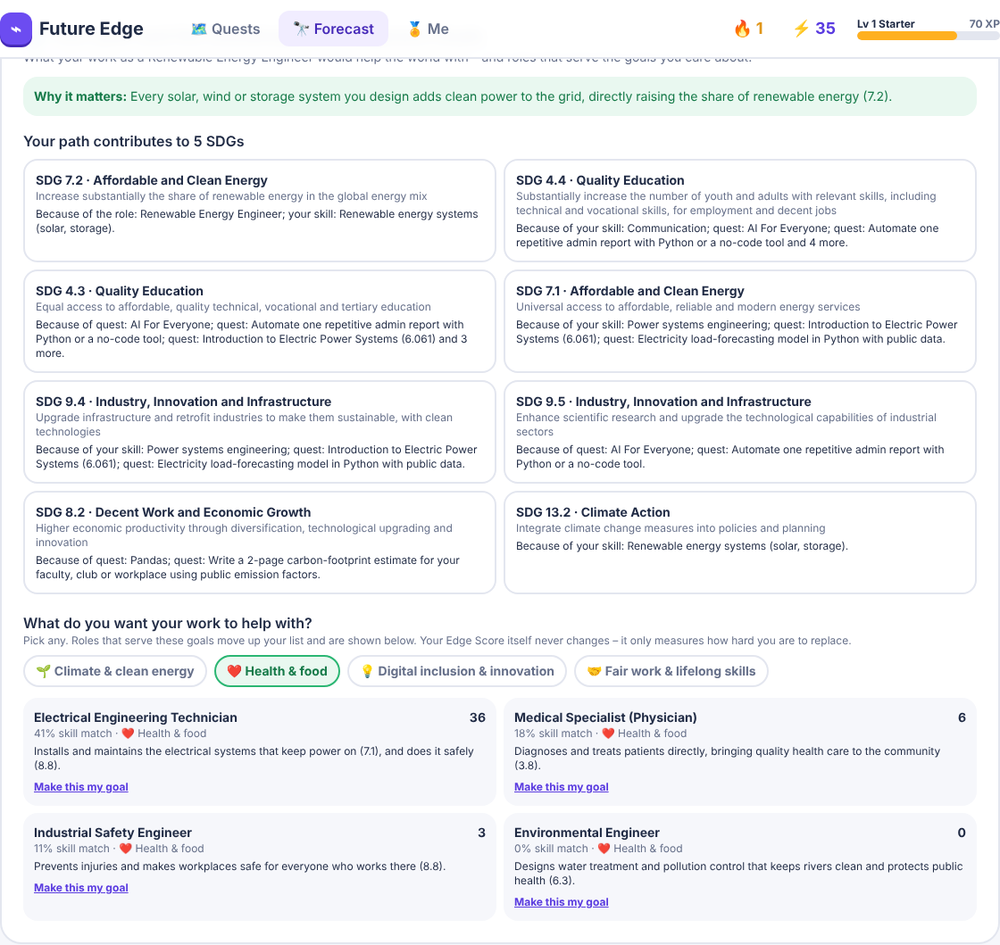
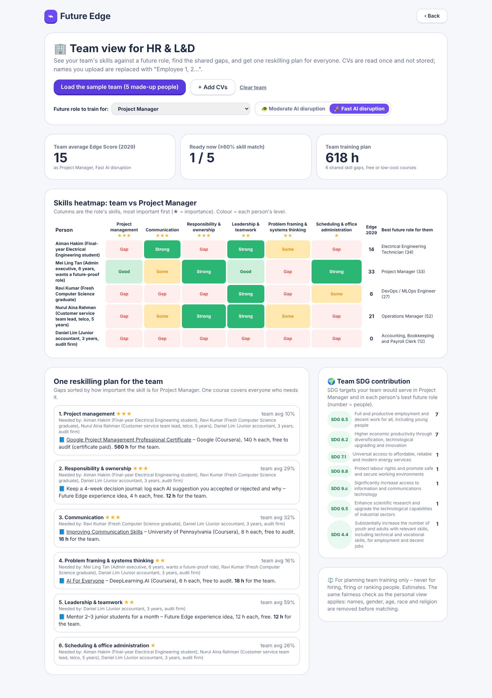

Your career weather forecast for the AI era: which of your skills AI will take over, which will keep you valuable, and the one move to make next.
Team BEBZA · Xiamen University Malaysia
Live: sdc-2026-future-edge.replit.app
of Malaysian professionals already use AI tools at work
have had any formal AI training
workers need reskilling in 3–5 years
share of tasks done mainly by people, today vs 2030
Today's career tools give a one-time keyword match from a static list. AI chatbots can invent jobs and courses. Neither tells you which of your own skills will still be yours in 3 years.
Final-year Electrical Engineering student. Wants to work in clean energy but doesn't know which skills will age well.
Her data entry and Excel reports are exactly the work AI is taking over. WEF expects data-entry clerk jobs in Malaysia to fall 28% by 2030.
Python, REST APIs and React on his CV – the work AI coding tools are getting best at. What makes him hard to replace?
Plus a customer-service team lead and a junior accountant – five made-up people with realistic made-up CVs (rules: synthetic data only). And HR / L&D managers who plan a whole team's reskilling.
PDF, Word, photo or text. Name, email, phone, IC, age and gender removed before matching.
Each skill: growing, holding or at risk – and how much AI can do now vs 2029.
Spot planted mistakes in an AI draft. Measures judgment, not self-rating.
Edge Score 0–100 per year, 2 scenarios, skills gap, real Malaysian pay and demand.
Ordered free courses and projects, with hours, SDG tags – starting with your One Move.
Edge Score = how hard you will be to replace by AI, shown as a weather forecast for each year to 2029.

Text classifier trained on 19,265 human-rated O*NET tasks. Reads each skill and your own CV sentence.
73.4% accuracy on occupations it never saw (baseline 53.2%)
Monthly arXiv papers for 10 AI areas, Oct 2023 – Sep 2026. Damped trend with 80% range. Refreshable live.
Backtest error 17.2% vs 22.7% naive
Review an AI-written site note, report or code with planted mistakes. Scores judgment and responsibility exactly.
Known answers – no opinions to learn
Fused with WEF Future of Jobs 2025 (Malaysia), DOSM wages and TalentCorp MyCOL into an explainable Edge Score with a low–high range.

| Must-have | In Future Edge |
|---|---|
| 1 Skills intake | CV upload (PDF / Word / photo / text) or paste; only catalog skills, with the CV sentence as evidence; user can edit levels |
| 2 AI-trend signal | arXiv monthly counts + Model 2, source and date shown, live refresh button; WEF / DOSM / MyCOL job market |
| 3 Role matching | 34 roles ranked by Edge Score with plain-English "why" for every number and a skills gap |
| 4 Reskilling pathway | Ordered courses + projects with hours and weeks; 53 free / low-cost resources, all links checked 24 Oct 2026, HRD Corp option |
| 5 SDG mapping | Every skill, role and step tagged; "your path contributes to…" with reasons; pick what your work should help with and matching roles move up |
| 6 Uncertainty | Moderate vs fast AI scenarios, low–high ranges from Model 2 and Model 3, "estimate, not a hiring decision" |
Good-to-haves too: HR team view, EN / BM / 中文 interface, a 12-person fairness check, progress tracking (XP, levels, badges), mobile-friendly – see the next slides.


We measure the skill the AI era rewards – judging AI output – and turn the forecast into small quests the user chooses to follow. The app never ranks people for employers.


Skills heatmap of a whole team vs a future role, shared gaps, one training plan with hours, team SDG contribution.
Every CV is re-read as 12 invented people – other names, genders, ages, races, religions. The result must be identical.
Switch language on every screen. Mobile-friendly, free courses only.
React + Vite + Tailwind → FastAPI (Python) → three in-process models → JSON catalogs. No database, no stored CVs. Optional Gemini API with a JSON schema for photo CVs, every phrase checked against the CV.
Imported from GitHub, built and tested in the Replit Shell (55 tests, 53 links checked with open internet), and hosted as a Replit autoscale deployment.
55 automated tests incl. a fairness test, held-out model evaluations, Apache-2.0 licence, every dataset and AI tool declared. CPU only – no GPU work, so RunPod not needed.
Hardest risk: reliable, updatable trend data. Fallback: free arXiv API with a resumable collector; if a refresh fails the app keeps the last good snapshot.
of test users reach ranked roles and a sourced plan in ≤ 5 minutes
more users able to name one skill to learn next and a free resource for it (before vs after)
of recommended courses link-checked within 7 days of a demo (53 / 53 today)
Phase 2: user test with 20+ XMUM students and staff · translate course content too · company / region SDG dashboards · job-posting data as a second trend signal.
Azimkhan Bekassyl (lead) · Elnurken Abdigaparov · Bernar Zholdybek · Alibek Berik · Shirvanskiy Zeinal
Try it: sdc-2026-future-edge.replit.app
Code: github.com/Magisterofdrinkingcoffee/sdc2026-future-edge